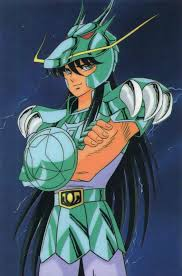
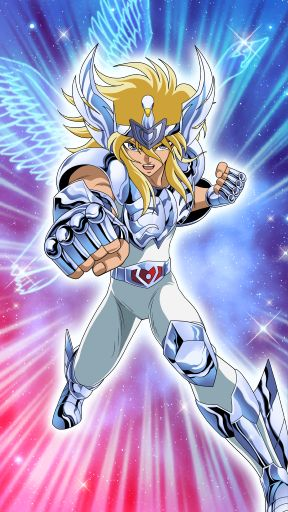

×
O protagonista principal, Seiya é um jovem impulsivo e determinado, sempre pronto para defender seus amigos e a deusa Atena. Seu cosmo é imenso e sua técnica mais conhecida é o Meteoro de Pégaso. Seiya é o coração da série, representando a esperança e a força de vontade.

×
mais leal e paciente do grupo, Shiryu é um jovem com um forte senso de justiça e honra. Mestre em artes marciais chinesas, ele possui uma técnica devastadora chamada Meteoro de Dragão. Shiryu é conhecido por sua resistência e por nunca desistir, mesmo diante de adversários muito mais poderosos.
